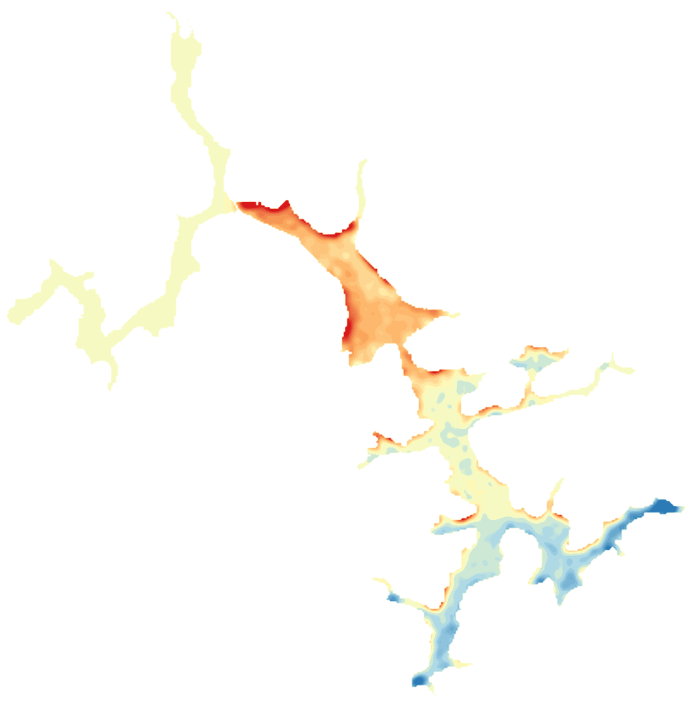

LakeScope › MD
Deep Creek Lake today
Updated 2026-11-21 - Atlas Labs
Clear water, 49°F water, level falling, near normal, calm this morning.
Water level
2459.06 ft
USGS gauge 03075871 - 2026-11-21
7-day trend: falling (-0.40 ft). Compared with normal for this date: -0.2 ft (same weeks, 2020-2025).
Water clarity and algae
Clear water Last clear view: about a week ago. 1 cloudy pass since.
Surface temperature
49°F
seen from space on 2026-11-19

Ice
Open - 0% ice cover
Estimate from weather and satellite, not a measurement. Check the ice yourself before going on it.
Weather, next 3 days
| Day | Sky | High / low | Wind | Rain |
|---|---|---|---|---|
| Saturday | Mostly Cloudy | 59 / 44°F | 8 mph SE | 0% |
| Sunday | Chance Light Rain | 56 / 46°F | 5 mph E | 31% |
| Monday | Chance Light Rain | 51 / 29°F | 10 mph W | 39% |
Sunrise 07:08 - sunset 16:57 - Waxing gibbous. National Weather Service.
Get the LakeScope app: alerts and the 3-D view of Deep Creek Lake